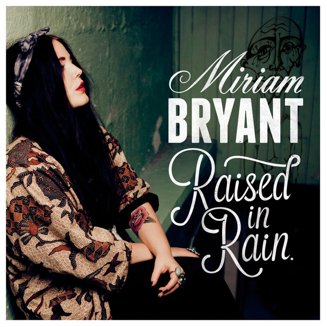
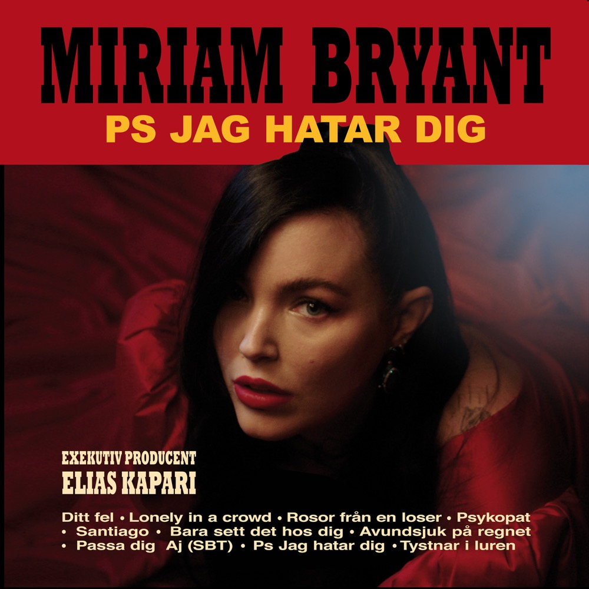

Top Song/Album's
First and Latest Releases
Albums & Musicians
- Latest released album: PS jag hatar dig (2021)
- First released album: Raised in Rain (2013)
- Musicians: Miriam Bryant, Jireel, Joakim Berg, Victor Leksell
"P.S I hate you" was released in October 2021, a record she wrote during the darkest period of her life about the breakup from a destructive relationship.Raised in Rain is the debut album by Swedish singer Miriam Bryant, released in March 2013 on Stereoscope Music/EMI. Bryant wrote the songs together with producer Victor Rådström. The album spent four weeks on the Swedish charts, peaking at number 12.


Side One
- Tystnar i luren
- Nån av oss
- Passa dig
- DITT FEL
- Lonely in a Crowd
Side Two
- Push Play
- Finders, Keepers
- Last Soul on Earth
- Raised in Rain
- Alone Isn't Lonely
- A Cappella Song
- Miriam Bryant received the award at the 2022 Grammy Awards for Best Music Album (PS jag hatar dig).
- She sings about "PS I hate you", a relationship she describes as "a long black tunnel" that she has now managed to get out of.
- Miriam Bryant
- She received the award for best song for "Tystnar i luren" together with Victor Leksell.